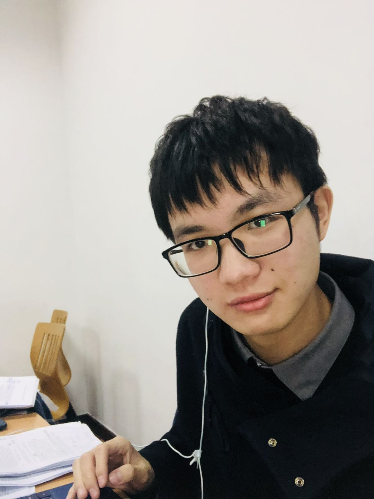

Chenghui Li (李程晖)
PhD Student
Statistics
University of Wisconsin-Madison
1300 University Ave
Madison, WI 53706
cli539 AT wisc.edu
Github: chl781
|
I am a 5th year PhD student at University of Wisconsin-Madison. I am advised by Nicolas Gracia Trillos. Before that, I obtained my bachelor's degree in Math from Zhejiang University in 2019. My thesis is about a Minsum packing optimization problem supervised by Professor Zhiyi Tan. I got my master's degree in Statistics from University of Wisconsin-Madison in 2020.
In my academic pursuits, I am interested in exploring topology and geometric perspectives to gain a deeper understanding of complex problems. This interest further motivates my study of algorithms and their concrete mathematical formulations. Additionally, I am passionate about designing fast and interpretable algorithms for statistical problems. My academic background is a diverse blend of mathematics, statistics, and computer science.
Preprints
Chenghui Li*, A. Martina Neuman*
“Consistency of augmentation graph and network approximability in
contrastive learning”
Chenghui Li, Jessi Cisewski-Kehe
“A divide-and-conquer approach to persistent homology”
Chenghui Li, Rishi Sonthalia, Nicolas García Trillos
“Spectral neural networks: approximation theory
and optimization landscape”
Publication
Nicolas García Trillos*, Pengfei He*, Chenghui Li*
“Large sample spectral analysis of graph-based multimanifold
clustering” Journal of Machine Learning Research (JMLR) 24(143):1−71, 2023.
Jelena Diakonikolas*, Chenghui Li*, Swati Padmanabhan*, Chaobing Song*
“A Fast Scale-Invariant Algorithm
for Non-negative Least Squares with Non-negative Data” Neural Information Processing Systems (NeurIPS)
2022, 35: 6264-6277.
Workshops
Chenghui Li, Rishi Sonthalia, Nicolas García Trillos,
“The optimization landscape of Spectral neural network” ICML 2024 workshop: High-dimensional Learning Dynamics.
Teaching
Spring 2024 [TA]: STAT 301 Introduction To Statistical Methods Fall 2023 [TA]: STAT 609 Mathematical Statistics I Spring 2023 [TA]: STAT 324 Introductory Applied Statistics for Engineers Fall 2022 [TA]: STAT 371 Introductory Applied Statistics for the Life Sciences Fall 2020 [TA]: STAT 301 Introduction To Statistical Methods Spring 2020 [Grader]: MATH 629 Introduction To Measure And Integration
Talks
Institute for Foudation of Data Science seminar, University of Wisconsin-Madison, Nov. 2024 Poster at DeepMath 2024, Philadelphia, Nov. 2024 Poster presentation and online talk at Neurips2023, New Orleans, Dec. 2023 Institute for Foudation of Data Science seminar, University of Wisconsin-Madison, Nov. 2023 Graph-based Techniques in Machine Learning minisymposium, Michigan State University, Oct. 2023 Geometry and topology seminar at Max Planck Institute for Mathematics, Leipzig Germany, June 2023 SIAM Conference on geometric and topological techniques in machine learning minisymposium, University State Utah, April 2023 Poster presentation and online talk at Neurips2022, New Orleans, Sep. 2022 Fall Workshop on Computational Geometry, Oct. 2021 Second Graduate Student Conference: Geometry and Topology meet Data Analysis and Machine Learning, July 2021
Service
|